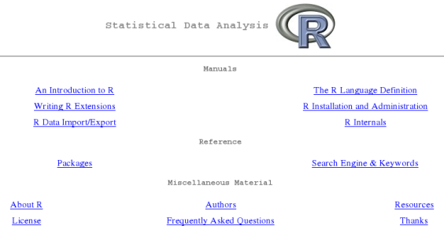
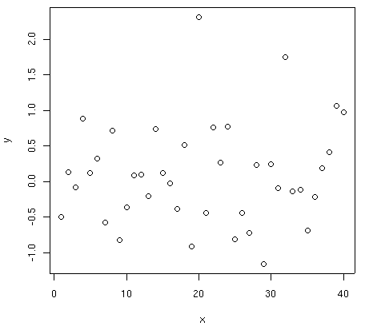
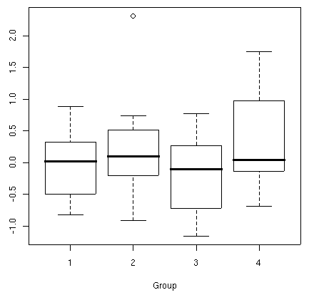
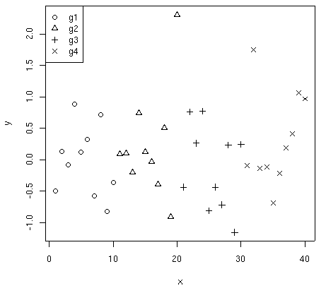
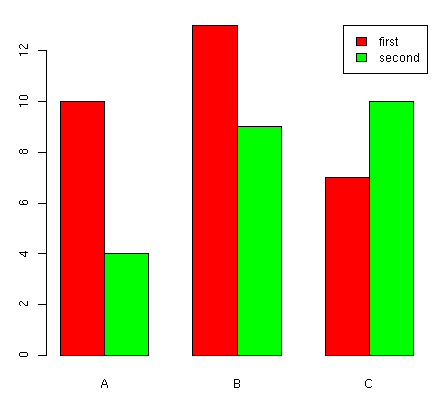
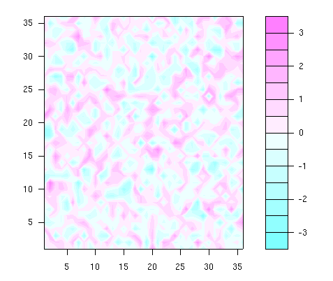
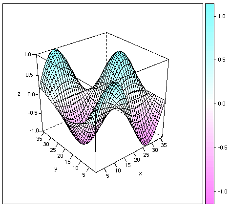

...making Linux just a little more fun!
Ben Okopnik [ben at linuxgazette.net]
On Mon, Feb 19, 2007 at 05:01:52PM +0000, Neil Youngman wrote:
> First off, TWDT is no longer TWDT. If you click on TWDT you find that the > mailbag has "Thread continues here" links. Could we make TWDT be TWDT?
Well, I've fixed up the mailbag-processing script to produce a TWDT "insert" that is a flat representation of the mailbag (and we actually have code in the scripts that will use this file if it's in '$LG_ROOT/data/twdt/'.) However, in order to use it, we need some Pythoneer to fix the build scripts so that they'll ignore the lg_{talkback*,tips,launderette}.html while building the TWDT.
Volunteers, please do step forward and be counted.
-- * Ben Okopnik * Editor-in-Chief, Linux Gazette * http://LinuxGazette.NET *
Amit Kumar Saha [amitsaha.in at gmail.com]
Hi list Any pointers to what Indic & CJKV has to do in case of the DocBook format?
[ Thread continues here (3 messages/1.88kB) ]
Neil Youngman [ny at youngman.org.uk]
On or around Tuesday 23 January 2007 16:46, Benjamin A. Okopnik reorganised a bunch of electrons to form the message:
> On Mon, Jan 22, 2007 at 09:23:58PM +0000, Neil Youngman wrote: > > > > The lack of any errors suggests to me that the problem is not with the > > disk; hence the thought that I should replace the controller. Is this a > > reasonable conclusion from the data available? > > > > I have tried reseating the controller card and cables, and moved the SATA > > cable to the secondary port on the SATA controller. > > > > Is there anything else I should be trying? > > Coming at it from the hardware end, I'd say that you have the right > idea: throwing in a different controller would be a pretty good test. > Shotgunning does make sense as a troubleshooting technique, when the > possible number of affected parts is low.
I've finally got round to putting in a new SATA controller, and it seems to have helped; it may even have solved the problem. Previously, trying to copy large amounts of data to the SATA disk would bring the system to a complete halt. The last time I tried to copy a 1.5GB file to the SATA disk, it died after 60MB. Now, I can copy the same file without any obvious problems.
There are still SATA errors on boot, which are a cause for concern, so I'll want to run for a while with that disk as my main disk, before I'm totally confident.
The errors on boot look like
ata2.00: exception Emask 0x0 SAct 0x0 SErr 0x0 action 0x2 frozen ata2.00: tag 0 cmd 0xb0 Emask 0x2 stat 0x50 err 0x0 (HSM violation) ata2: soft resetting port ata2: SATA link up 1.5 Gbps (SStatus 113 SControl 310) ata2.00: configured for UDMA/133 ata2: EH completeand that repeats a dozen times. It doesn't mean much to me, so I guess I'll need to spend some time with Google.
Neil
[ Thread continues here (6 messages/8.01kB) ]
Mulyadi Santosa [mulyadi.santosa at gmail.com]
Dear Gang..
Any of you know what tools (preferrably open source) I can use to generate a predefined amount of CPU load in Linux? For example, the tool can receive an argument to generate 40% CPU load:
./loader -l 40I plan to use such tool to generate background load, and do certain tests with another application to test scheduling latency. Thanks in advance for your advice.
regards,
Mulyadi
[ Thread continues here (2 messages/1.50kB) ]
Ben Okopnik [ben at linuxgazette.net]
Eric S. Raymond bids a less-than-fond farewell to RedHat:
http://lwn.net/Articles/223038/
Off to Ubuntu-land for him. Following in my footsteps, no doubt. 
-- * Ben Okopnik * Editor-in-Chief, Linux Gazette * http://LinuxGazette.NET *
Amit Kumar Saha [amitsaha.in at gmail.com]
Hi all I am working on a command-line utility to put nmap's XML output to some great and frutiful use. Please suggest some features that could be incorporated to make it Uber Cool.
Thanks
-- Amit Kumar Saha
[ Thread continues here (3 messages/1.67kB) ]
Kat Tanaka Okopnik [kat at linuxgazette.net]
Hi gang -
After all this time editing the mailbag, I finally have an actual question for The Answer Gang. (I've searched the Net, and also asked at mailing lists for icewm and Inkscape.)
I've been using icewm as my window manager, but, at this point, I either need to find a way to configure it differently, or switch window managers altogether.
The basic problem is that icewm takes the input and processes it before Inkscape. (Input in this case is alt-click; there may be other input that is also an issue, but this is the one I'm aware of.) If I can, I'd like to bypass it, or alter the keypress combination that icewm is looking for.
The other possibility is finding a better window manager. As an interim measure, Ben found that ratpoison will at least ignore the alt-click issue. Unfortunately, ratpoison makes it harder to work in gimp. I know there are dozens if not hundreds of other window managers, but I'd really rather not test every single one of them.
When I was using ThatOther "OS", one of the things I used quite often was the IME (Input Method Editor), which allowed me to use a sequence of keystrokes to alter the way that my keyboard and mouse input was interpreted. Is there some equivalent that might be my answer here?
Hopeful,
-- Kat Tanaka Okopnik Linux Gazette Mailbag Editor kat@linuxgazette.net
[ Thread continues here (10 messages/27.83kB) ]
qqq1one @yahoo.com [qqq1one at yahoo.com]
Hi All,
I'd like to have 2 users using separate X-sessions on the same CPU - simultaneously. That is, two different monitors plugged into two different graphic-cards (or a single dual-headed card), each matching two different keyboards and mice, but all using one CPU.
I know this can be done with Linux, but the information I found on how to do this is over a year old, is for a 2.4 series kernel, and instructs the user to patch the kernel and/or X in order to get the keyboards to be treated as separate from each other.
I'd like to avoid any patching, if possible, because I like to keep my kernel and X server up to date and don't want to have to re-patch them every time I get another update. I'm currently running an up-to-date Fedora Core 5 system (2.6.20-1.2300.fc5smp and xorg-x11-server-Xorg-1.0.1-9.fc5.6), and will be moving to a FC6 kernel and xorg-x11 server soon. I found the "startx -- -layout Multihead" command, and intend to buy a second video card (PCI-based), monitor, USB keyboard and mouse. Assuming I do a fresh install of FC6 with both sets of equipment installed, will patching still be required, and what else might I have to do? Thanks in advance.
[ Thread continues here (4 messages/5.00kB) ]
Kat Tanaka Okopnik [kat at linuxgazette.net]
Hi gang -
I'm trying to figure out how to view a multipage tif. It's something that Wind0ws handles just fine, but I don't have the right tools to do it here on my Debian system.
When I try to view it in Gimp, it comes out very distorted, and pretty much illegible. (It's Japanese, so every pixel counts.)
Thanks,
-- Kat Tanaka Okopnik Linux Gazette Mailbag Editor kat@linuxgazette.net
[ Thread continues here (6 messages/8.26kB) ]
[ In reference to "FVWM: How Styles are Applied" in LG#127 ]
David Chanters [david.chanters at googlemail.com]
Hey all,
I read with interest the article which explained how FVWM parses its style lines. I've been a FVWM user for about two years now, and this article really inspired me to rearrange parts of my config. I now have everything the way i want it, except for some things, which I want to ask the rest of you:
1. Are any of you using FVWM, and if so, do you have anything useful to share, such as key-bindings, etc? 2. Can I somehow get new window to receive focus even though I am using ClickToFocus? 3. What's FvwmIconMan and do I really need it to replace FvwmTaskBar?
I hope the gang can help with this, and thank you so much for this article. In klnd regards,
David
[ Thread continues here (3 messages/3.82kB) ]
[ In reference to "HelpDex" in LG#135 ]
Ben Okopnik [ben at linuxgazette.net]
On Thu, Feb 08, 2007 at 01:07:39PM -0500, saallan@wightman.ca wrote:
> I have read your article discussing swf and possible open-source readers and players. > My Debian Linux machine (a Mac Quadra running Sarge) is nowhere near adequate to > your suggestions. Is there a swf to jpeg converter that could run on my system? > Thanks - Larry in the Ontario deep woods.
Hi, Larry - I know it's taken a while to answer, but I've been tied up in a lot of other things, all while trying to find an answer - although it was for reasons different from yours, but a similar problem.
As far as I can tell, the solution for reading SWFs on older, slower machines is to use a viewer other than Adobe's; e.g., 'swf-player', or Gnash (http://www.gnu.org/software/gnash/), or one of the viewers listed at osFlash 'http://www.osflash.org/'. Have you tried any of those yet? I found that swf-player is pretty easy on the CPU and disk space both. Please let us know how it goes.
Coming at it from the other end, I'm using Ubuntu on a 64-bit AMD laptop - and as it happens, I have (well, had) the same problem from the other end: I couldn't view SWFs because there isn't yet a 64-bit Flash viewer for Linux. Well, some people - including GNU - are working on one, but... it's all very alpha and experimental and non-usable (at least by me.) So, after spending a bunch of time on this, I just dropped the whole idea of doing it in 64-bit and built a 32-bit chroot enviroment for those apps which haven't quite made the transition yet. Now, when I type "firefox32", it fires up the chroot, runs the 32-bit version of Firefox, and - voila - I've got Flash and all.
Now, if I could just find similarly easy fixes for my GL and WiFi, I'd be all set...
-- * Ben Okopnik * Editor-in-Chief, Linux Gazette * http://LinuxGazette.NET *
[ Thread continues here (10 messages/11.81kB) ]
[ In reference to "Build a Six-headed, Six-user Linux System" in LG#124 ]
Ruben Zamora [ruben.zamora at zys.com.mx]
[[[ This post contained tons of extraneous html. Please, send us text, not mini-webpages! -- Kat ]]]
Hi am Ruben
I trying to run a Multi SEAT with 2 MX 4000 or 2 FX 5200.
First I Install Fedora Core 6 in my Desktop. I did all the procedure.
And I the test y can turn on de 2 seat. But when I put all in the GDM, only one Seat goes on.
Driver es "nv" for the card... After that I install the last release of the nvidia driver, I cant go on because gave me a lots o error.. And my computer Freezer.
Any ideal what name of the driver I need to use to my card?????
I read that I need to change for driver "nv" to "nvidia".
Thanks A lot
[ In reference to "2-Cent Tips" in LG#137 ]
Kapil Hari Paranjape [kapil at imsc.res.in]
Hello,
On Mon, 19 Mar 2007, Kapil Hari Paranjape wrote:
> Here is a way to copy a partition which is mounted without copying
> all the other partitions that are under it.
>
> Let /patha be the mountpoint of the partition from which you want to
> copy (it could even be the root path /).
>
> Let /dev/new be the device to which you want to copy the data.
>
> mkdir /var/tmp/src
> # The bind mount is the crucial thing!
> mount --bind /patha /var/tmp/src
> mkdir /var/tmp/target
> mount /dev/new /var/tmp/target
> cd /var/tmp/src
> # I find this a neat way to copy all files
> # and permissions
> find . | cpio -pdum /var/tmp/target
> umount /dev/new
> umount /var/tmp/src
> rmdir /var/tmp/{src,target}
Actually it turns out (from current experience!) that
find . | cpio -pdum /var/tmp/targetis the "wrong" way to do this. The correct way is
find . -depth | cpio -pdum /var/tmp/targetThis way the files get listed first and then the directory and this speeds up the task.
Another use for this trick is when you want to "re-combine" a partition. Say you created a separate "/usr" partition and then later decided that you have enough space in the root partition for everything.
mount --bind / /mnt cd /usr find . -depth | cpio -pdum /mnt/usr/ umount /mntThen edit fstab appropriately to "noauto" out the /usr mount and reboot. After the reboot the "/usr" partition is available for alternate use. (You can avoid a reboot using "init 1" and possibly "pivot_root" but reboot is probably safer!)
Regards,
Kapil. --
[ In reference to "Getting Started with Linux Mint" in LG#137 ]
Finn [detto_o at freenet.de]
Awesome article, very well written!
This is not only a LinuxMint Review, but a very good tutorial for
beginners too.
Thanks for your work man, i'll recommend this one to some of my buddies
that want to give Linux a try.
cheers, deTTo
[ In reference to "Rule-based DoS attacks prevention shell script" in LG#137 ]
René Pfeiffer [lynx at luchs.at]
Hello, TAG!
I threatened to dust off a script that automagically deals with SSH brute forcing. The Linux Netfilter has a module which can match recently seen IP addresses. It's called "recent" and it can dynamically create a list of IP addresses and then match against that list for the purpose of reacting to network probes for example. Let's take an example from one of my servers:
iptables -A INPUT -p tcp --dport 22 -m state --state NEW -m recent --set --name SSH
iptables -N SSH_WHITELIST
iptables -A SSH_WHITELIST -s 10.0.0.253 -m recent --remove --name SSH -j ACCEPT
iptables -A SSH_WHITELIST -s 10.0.0.254 -m recent --remove --name SSH -j ACCEPT
iptables -A SSH_WHITELIST -s 127.0.0.1 -m recent --remove --name SSH -j ACCEPT
iptables -A INPUT -p tcp --dport 22 -m state --state NEW -j SSH_WHITELIST
iptables -A INPUT -p tcp --dport 22 -m state --state NEW \
-m recent --update --seconds 1800 --hitcount 2 \
--rttl --name SSH -j LOG --log-prefix SSH_brute_force
iptables -A INPUT -p tcp --dport 22 -m state --state NEW \
-m recent --update --seconds 1800 --hitcount 2 --rttl --name SSH -j DROP
The first rule directs all new inbound packets to port 22/TCP (SSH
usually) to Netfilter's "recent" module. In addition to that the rule
specifies that the list named SSH is to be used. After that I create a
custom chain named SSH_WHITELIST where I collect all IP addresses that
shouldn't trigger the automatic defence. After SSH_WHITELIST is defined
all traffic from the whitelisted IP addresses gets redirected to
SSH_WHITELIST and is allowed to pass unhindered.
The last two rules carry all the magic. Notice that the rules were added to the end of the respective chains which means that everything I described so far is already dealt with. The next line does a matching against all new inbound packets to port 22/TCP against. This time we add the parameters "--update --seconds 1800 --hitcount 2" meaning that every packet that arrives more than once (i.e. twice) within 1800 seconds will match our rule. If it matches the IP address will be added to the list SSH and a log entry with the prefix "SSH_brute_force" will be sent to syslog. Since we use the LOG action, Netfilter goes on to the next rule. The last line does the same, but it drops any packets from the IP address that offended our limit of one connection attempt within 1800 seconds.
The lists Netfilter's "recent" module maintains can be inspected in the directory "/proc/net/ipt_recent/". All the offenders triggering the rules above can be extracted from /proc/net/ipt_recent/SSH along with the UNIX timestamps when they tried to contact us. The lists only live as long as the kernel runs. A shutdown will clear everything. That's why the rule before the last one writes the blocked IP to syslog.
So, TIMTOWTDI is also valid for log parsing in conjunction with the Linux Netfilter. ;)
Happy hunting,
René.
[ In reference to "/tag/2.html" in LG#issue72 ]
Kevin R. Bulgrien [kbulgrien at worldnet.att.net]
"getting volume label for CD" at http://linuxgazette.net/issue72/tag/2.html does not really have a good answer. I suggest something like this:
To find the volume name of a CD or other device, use the volname utility. For example:
$ grep hdc /etc/fstab /dev/hdc /mnt/cdrom auto umask=0022,users,iocharset=utf8,sync,noauto,ro,exec 0 0 $ sudo volname /dev/hdc 46368_546292The volume name of the CD in /dev/hdc is "46368_546292".
-- Kevin R. Bulgrien kbulgrien@att.net
[ Thread continues here (2 messages/1.97kB) ]
Suramya Tomar [security at suramya.com]
Hey Everyone, This is not really a Tip but a solution to a compatibility issue between SVN and SSH that users might face while updating their system.
I recently upgraded SSH on my system. SSH v 4.3 is the latest version available using apt-get but the latest version available is 4.6p1 so I downloaded the source and compiled it for my system (after uninstalling the original package).
After this I tried using SVN to download the LG repositories to my local system. It downloaded the files successfully but I kept getting the following error message multiple times on the screen:
Killed by signal 15Did some research and found that the SVN version installed on my system (Ver 1.4.2) had a few compatibility issues with the latest version of SSH. The latest version available in the apt-get repositories is 1.4.2 while the latest version available is 1.4.3. So I compiled and installed the latest version from the source (After removing the original version) and after that the error was fixed.
So if you are installing SSH from source, you should also install SVN from source.
Hope this helps someone.
- Suramya
-- Name : Suramya Tomar Homepage URL: http://www.suramya.com ************************************************************
[ Thread continues here (3 messages/2.43kB) ]
Canonical set free its Feisty Fawn in April. Ubuntu 7.04 desktop edition includes a ground-breaking Windows migration assistant, excellent wireless networking support, and improved multimedia support.
Ubuntu 7.04 server edition adds support for hardware facilities that speed up the use of virtual machines, as well as other improved hardware support, making it an excellent choice as a Web, database, file and print server, the fastest growing area of Linux server use. Ubuntu's support for thin clients is boosted with advanced print and sound support.
On x86 systems with the Intel VT or AMD-V extensions[1], Kernel-based Virtual Machine support (KVM) allows users to run multiple virtual machines running unmodified Linux. Each virtual machine has private virtualized hardware: a network card, disk, graphics adapter, and so on. Ubuntu is the first Linux distribution with Para-Ops and VMI support, which provides optimized performance under VMware.
"Our users want choice and ease-of-use, so, whether as a guest or host operating system, Ubuntu 7.04 will support commercial virtualization products such as VMWare, as well as open source projects including Xen and KVM," said Jane Silber, Director of Operations, Canonical.
7.04 adds a range of new performance improvements including better performance on multicore processors, support for the Processor Data Area, and optimizations for 64-bit architectures. Secure remote network installation using a remote SSH terminal is a new admin feature. [ED: However, some early adopters suggest installing the Ndisgtk package, if your wi-fi card isn't recognized.]
Ubuntu 7.04 supports the Linux 2.6.20 kernel, the recent GNOME 2.18 desktop environment, and thousands of additional applications. Download Ubuntu from www.ubuntu.com/download .
As 7.04 launched, it also offered a highly integrated Java developer stack making it easier for GNU/Linux developers to leverage the Java platform in their applications. This stack, which comprises key popular Java technologies such as GlassFish v1 (the open source Java Platform, Enterprise Edition 5 implementation), Java Platform, Standard Edition (JDK 6), Java DB 10.2 (built from Apache Derby) and NetBeans IDE 5.5 - will be available in the Multiverse component of the Ubuntu repository on April 19. These technologies will be available for Ubuntu users to install easily over the network with apt-get and other standard software management tools.
"Sun and Canonical are working together to bring the full power of the Java platform in a fully integrated and easy to install fashion to the free and open source software communities," said Ian Murdock, founder of Debian Linux and now a chief operating systems officer at Sun.
More information on the work involved in packaging these applications for inclusion in Ubuntu will be presented at this year's JavaOne(SM) Conference in San Francisco during session TS-7361, by Harpreet Singh of Sun and Jeff Bailey of Canonical entitled "Packaging Java Platform Applications into Ubuntu". Other related JavaOne events are Ian Murdock's talk on "Linux vs. Solaris?" at CommunityOne and an entire new Open Source Track that will cover Sun's Free/Open Source Java software strategy in depth, starting with Simon Phipps' talk TS-7498, "Liberating Java: Free and Open Opportunity for the Future."
Redmond's biggest employer continues to cross license its patent portfolio with other companies, including NEC, Fuji-Xerox, Seiko-Epson and Nortel, as well as Novell's cross-licensing imbroglio.
The Samsung deal in April allows Samsung and its distributors to utilize Microsoft's patents in Samsung's products and gives Microsoft access to Samsung's Media patents. It also protects Samsung from unidentified software inventions MS claims are in Linux.
Samsung, the first company to introduce a Blu-ray disc player, will introduce a dual format High-Definition (HD) optical disc player in time for the holidays that will fully support both HD-DVD and Blu-ray Disc formats and their interactive technologies, HDi and BD-Java. There are unspecified monetary payments for access to the respective company's IP. Samsung and Microsoft have previously collaborated in Pocket PC and Windows Mobile designs and other media projects.
See: Samsung's press release for more details .
Now available from Port 25, the Microsoft Open Source site, this is a plug-in for Firefox 2.0 that plays media files with an embedded Windows Media Player. The plugin functions as an OCX control. Other Firefox plugins are expected from Port 25, including a CardSpace security plugin.
Commentators point out that Microsoft's new Flash-killer, the Silverlight project, will require near universal access to a WMP-compatible player in the browser. The plugin will keep WMP as a dominant Internet media format.
For a more detailed story, see this page .
The Linux Foundation has updated the Linux Standard Base (LSB) and released a new testing toolkit. The update to LSB 3.1 introduces new automated testing toolkits for distributions and application vendors, linking development more closely to certification.
"All the moving parts are coming together to give the Linux ecosystem its first testing framework that will coordinate development of upstream code to standards and downstream implementations," said Jim Zemlin, executive director of the Linux Foundation. "In order for a standard to be effective, it needs to have a powerful - and usable - testing infrastructure. Our testing framework will deliver that functionality and allow the Linux ecosystem to collaborate and test code while it's being developed....."
The LSB delivers interoperability between applications and the Linux operating system, allowing application developers to target multiple versions of Linux with only one software package. This allows Linux to compete effectively against proprietary, monolithic platforms. The LSB has marshaled the various Linux distribution vendors to certify to its standards, including Red Hat, Novell, Debian, Ubuntu, Xandros, Mandriva and more.
Even though Linux is developed in a highly decentralized manner, Linux must provide the same long-term compatibility guarantees and comprehensive compatibility testing as proprietary platforms such as Microsoft Windows. The LSB Test Framework enables interoperability for applications targeted at LSB 3.0 and higher and will provide backward compatibility so that these applications will continue to run correctly on distributions compatible with future versions of the LSB.
The Linux Foundation initiated a multi-million dollar project to build the first open source testing framework that will link upstream projects to the LSB and downstream providers. The first result of that testing partnership is available now: the LSB Distribution Testkit .
The LSB DTK introduces a Web-based front end testing process that represents the first results of the Linux Foundation's partnership with the Russian Academy of Sciences. ISV testing tools are also available from http://developer.linux-foundation.org; these include the LSB Application Testkit, a lightweight download that contains just the LSB validation tools needed for ISVs to check if their application is LSB compliant.
The Linux Foundation urges distro and package developers, as well as interested users, to use the LSB DTK. As an open source project, the testing framework needs users to get involved, provide feedback and patches for continued enhancement. LSB 3.1 is available at http://www.linux-foundation.org/en/LSB . The new testing kits can be found at http://www.linux-foundation.org/en/Downloads .
The latest stable version of the Linux kernel is: 2.6.20.7 [For updates, see www.kernel.org] .
The Debian Project is pleased to announce the official release of Debian GNU/Linux version 4.0, codenamed "etch", after 21 months of constant development. Debian GNU/Linux is a free operating system that supports a total of eleven processor architectures and includes the KDE, GNOME and Xfce desktop environments. It also features cryptographic software and compatibility with the FHS v2.3 and software developed for version 3.1 of the LSB.
Using a now fully integrated installation process, Debian GNU/Linux 4.0 comes with out-of-the-box support for encrypted partitions. This release introduces a newly developed graphical frontend to the installation system supporting scripts using composed characters and complex languages; the installation system for Debian GNU/Linux has now been translated to 58 languages.
Also beginning with Debian GNU/Linux 4.0, the package management system has been improved regarding security and efficiency. Secure APT allows the verification of the integrity of packages downloaded from a mirror. Updated package indices won't be downloaded in their entirety, but instead patched with smaller files containing only differences from earlier versions.
Debian GNU/Linux can be downloaded right now via bittorrent (the recommended way), jigdo or HTTP; see Debian GNU/Linux on CDs or Debian's site for further information. It will soon be available on DVD and CD-ROM from numerous vendors, too.
Fedora 7 Test 3 has been released featuring both GNOME and KDE based installable live CDs, and a spin named "Prime" that combines desktop, workstation, and server functionality.
The merge of Fedora Core and Fedora Extras repositories and infrastructure is in progress. The major components included in this release are GNOME 2.18, KDE 3.5.6 and a 2.6.21rc5 based Linux kernel.
Mandriva has announced the release of Mandriva Linux 2007.1, marketed as "2007 Spring".
Mandriva Linux 2007 Spring integrates the latest innovations in the fields of office suite applications, Internet, multimedia and virtualization technologies. Mandriva Linux 2007 Spring also includes special new features such as WengoPhone, Google Picasa and Google Earth.
In April, Launchpad.net started public beta testing of Launchpad 1.0, a free Web-based collaboration service that aides communication between different software projects.
Collaboration has traditionally been difficult across communities that use different tools to exchange information. Launchpad's new approach links data from a variety of project-specific sources in different communities and presents it in a unified interface, bringing those communities closer together to solve common problems such as bugs in shared code. This public beta includes a redesigned interface that allows projects to brand their presence in the system and highlights the current activity of project members to keep track of the latest changes.
The Ubuntu Linux distribution uses Launchpad to keep track of conversations across hundreds of free software communities. The service makes it possible for the Ubuntu team to coordinate work on tens of thousands of bug reports, many of which involve third-party development communities, and hundreds of feature proposals for each release.
Around 2,700 projects have been registered, and while many of those do not use Launchpad as their primary hosting infrastructure, their registration in Launchpad facilitates collaboration between other projects who depend on their code.
Launchpad helps projects collaborate via team management, bug tracking, code hosting and language tranlation facilitities. As an example, Launchpad offers automatic translation suggestions - from a library of 750,000 translated strings - and a community of 19,000 registered translators to radically cut the time required to localise a project into many languages. Launchpad also uses the Bazaar revision control system, which can link to projects using CVS or Subversion, and can allow new participants in a community to have full revision control of their own submissions using Bazaar before they have been given commit access to a project's central CVS or SVN repository.
For more information, see https://answers.launchpad.net/launchpad/ .
SWsoft announced, at the end of April, a turn-key offering for businesses exploring operating system virtualization. The Virtuozzo Enterprise Starter Pack, priced at less than $1,000, enables new users to try out OS virtualization technology for a small server consolidation project or pilot deployment. The software can be downloaded, installed, and up and running in minutes.
The Virtuozzo Starter Pack for either Windows or Linux allows up to four virtual environments on a single or dual CPU, and includes a full management toolset and a one year of support and maintenance.
The Virtuozzo Enterprise Starter Pack comes with VZP2V, a Physical-to-Virtual tool that allows easy migration from a dedicated physical server to a Virtuozzo virtual server and ensures that the virtual server performs the same as the physical server.
Last year, SWsoft grew revenues from its Virtuozzo and Parallels virtualization product lines by a remarkable 734 percent. An IDC industry analyst report published last September cited SWsoft as growing fastest among all vendors in the hot overall market for virtualization technology.
SWsoft Virtuozzo dynamically partitions a single Windows or Linux operating system instance into scalable virtual environments with up to hundreds of virtual environments per physical server. For more information, see this page .
Opsware has added new security and compliance features along with a new Opsware community element into its Opsware Network.
The subscription service, used exclusively by Opsware customers to help mitigate vulnerabilities and proactively manage compliance, delivers vulnerability alerts and compliance policies for the Opsware Server Automation System and Network Automation System, upon which vulnerabilities and policy violations that impact the IT environment can be immediately realized. Additionally, Opsware Network Community delivers essential automation content across the Opsware product family, including security best-practices policies certified by the Center for Internet Security (CIS) and by the National Security Agency (NSA).
By making these updates available through the Opsware Network Subscription Service and establishing a direct link to customers with remediation policies for their unique environment, Opsware ensures that the vulnerable IT assets are quickly identified, users are notified, and the information is readily available. In addition, compliance reports provide an at-a-glance status of the state of the IT environment.
Launched in 2006, The Opsware Network automates identification of security vulnerabilities across the IT environment. The Opsware Network keeps IT organizations proactively informed of where security exposures exist within their environment and how to immediately act on fixing an issue to provide rapid remediation. Leveraging information captured through the Opsware Server Automation System and Network Automation System, The Opsware Network identifies all vulnerable data center assets, and provides the means required to remediate relevant servers and devices at the click of a button, to ensure an ongoing state of security and compliance.
The optional Subscription Service delivers vulnerability and compliance content to Opsware users. The compliance policies enable the administrator to immediately perform audits to measure and enforce compliance with regulatory policies. For more information, visit http://www.opsware.com .
At the Intel Developer Forum in Beijing in April, Intel executives detailed over 20 new products and technology innovations aimed at making computers and consumer electronics devices much more responsive and secure.
Pat Gelsinger, senior vice present and general manager of the Digital Enterprise Group, provided performance indicators for Intel's upcoming Penryn family of processors. For desktop PCs, he said to expect increases of about 15 percent for imaging-related applications; 25 percent for 3-D rendering; more than 40 percent for gaming; and more than 40 percent faster video encoding with Intel SSE4 optimized video encoders.
Gelsinger unveiled "Tolapai" plans, the first in what will be a family of enterprise-class "system-on-chip" (SoC) products that integrate several key system components into a single Intel architecture-based processor. The 2008 Tolapai product is expected to reduce the chip sizes by up to 45 percent, and power consumption by approximately 20 percent compared to a standard four-chip design.
Gelsinger also outlined product plans, including Intel's high-end multi-processor servers (codenamed "Caneland"). The quad- and dual-core Intel Xeon processor 7300 series will arrive in 3Q07 in 80- and 50-watt versions for blades. The new servers will complete the company's transition to its Core microarchitecture for Xeon processors. Sun Microsystems demonstrated its Solaris operating system running on an Intel Xeon(R) 5100 series processor based system using Intel Dynamic Power technology, a new capability focused on reducing the power required for a memory subsystem.
For PC security and manageability benefits, Intel will introduce the next-generation Intel vPro processor technology, codenamed "Weybridge," in the second half of the year and using the new Intel 3 Series Chipset family, formerly codenamed "Bear Lake."
The GP-B satellite was launched in April 2004 and collected a year's worth of data to determine if predictions of Albert Einstein's General Theory of Relativity are correct. The ultra-sensitive gyroscopes attempted to detect a tiny amount of precession, due to the effect the Earth would have on local space-time around it. So far, the data analysis confirms that effect and General Relativity - at least near Earth.
The experiment had to detect variances of less than 0.002 degrees. Read the full story at http://www.physorg.com/news95953845.html .
[1] Rick Moen comments: You can verify this CPU capability by booting Linux on the candidate processor, using (e.g.) a Knoppix or other live CD and examining the CPU flags section of /proc/cpuinfo. The minimal Linux kernel version for this purpose is 2.6.15 on Intel or 2.6.15 on AMD. Look for flag "vmx" on Intel CPUs, indicating presence of the Intel VT extensions. Look for flag "svm" on AMD CPUs, indicating presence of the AMD SVM (aka "AMD-V") extensions.
Talkback: Discuss this article with The Answer Gang
 Howard Dyckoff is a long term IT professional with primary experience at
Fortune 100 and 200 firms. Before his IT career, he worked for Aviation
Week and Space Technology magazine and before that used to edit SkyCom, a
newsletter for astronomers and rocketeers. He hails from the Republic of
Brooklyn [and Polytechnic Institute] and now, after several trips to
Himalayan mountain tops, resides in the SF Bay Area with a large book
collection and several pet rocks.
Howard Dyckoff is a long term IT professional with primary experience at
Fortune 100 and 200 firms. Before his IT career, he worked for Aviation
Week and Space Technology magazine and before that used to edit SkyCom, a
newsletter for astronomers and rocketeers. He hails from the Republic of
Brooklyn [and Polytechnic Institute] and now, after several trips to
Himalayan mountain tops, resides in the SF Bay Area with a large book
collection and several pet rocks.
By Matteo Dell'Omodarme and Giada Valle
The aim of this article is to introduce the R environment and to show its basic usage. Only a small share of the huge amount of software features can be described here. We chose to put special emphasis on the graphical features of the software, which can be appealing particularly to novel users.
R (http://www.r-project.org) is an integrated suite of software tools for data manipulation, calculation, and graphical display. It provides a huge set of statistical and graphical techniques such as linear and nonlinear modelling, statistical tests, time series analysis, non-parametric statistics, generalized linear models, classification, clustering, bootstrap, and many others. R is being developed for the Unix, Windows, and MacOS operating systems.
The core of R is an interpreted computer language that allows branching and looping as well as modular programming using functions. Most of the user-visible functions in R are written in R, but it is possible to interface to procedures written in C, C++, or FORTRAN for efficiency. Elementary commands consist of either expressions or assignments. If an expression is given as a command, it is evaluated, printed, and the value is lost. An assignment also evaluates an expression and passes the value to a variable, but the result is not automatically printed. Commands are separated by either a semicolon or a newline.
The R language was developed from the S language - which forms the basis of the S-Plus systems - and it is very similar in appearance to it. Most of the code written in S can run in R with no or little modification. While S-Plus is proprietary software, R is free software distributed under a GNU-style copyleft, and an official part of the GNU project. All these features have made it very popular among academics.
The main features of R include:
These features are extended by a large collection of user-supplied packages. There are more than twenty packages supplied by default with R ("standard" and "recommended" packages) and many others (about 1000) are available through the CRAN (Comprehensive R Archive Network) family of Internet sites and elsewhere.
An enormous amount of background information, documentation, and other resources is available for R. CRAN is the center for information about the R environment. The documentation includes an excellent internal help system, some user guides (in particular An Introduction to R), a FAQ list , and a number of textbooks (see the R project Web page for a comprehensive bibliography.) In addition to the textbooks, the R project Web page also hosts several contributed tutorials and manuals.
As final remarks, we want to point out two software features not mentioned above. First, R can also be run non-interactively, with input from a file and output sent to another file. Second, there are several packages available on CRAN to help R communicate with many database management systems. They provide different levels of abstraction, but all have functions to select data within the database via SQL queries, and to retrieve the result as a whole or in pieces.
The latest copy of R, as well as most contributed packages, can be downloaded from the CRAN Web site. Binaries for several platforms and distributions are available at http://cran.r-project.org/bin/ . Source code can be downloaded at http://cran.r-project.org/sources.html . Note that one needs a FORTRAN compiler and a C compiler to build R. (Perl version 5 is needed to build the R documentation.)
Installation from source is straightforward. Download the source code (the latest is R-2.4.1.tar.gz), extract it, and change directory to the one extracted from the archive:
$ tar zxf R-2.4.1.tar.gz $ cd R-2.4.1
Then, issue the usual commands:
$ ./configure $ make $ make install
This will perform the compilation and the installation of binaries and libraries (typically in /usr/local/bin/ and /usr/local/lib/R/).
The tarball contains all the standard and recommended packages. Once this base version is installed, other user-contributed packages can be downloaded from http://cran.r-project.org/src/contrib/PACKAGES.html. CRAN Task Views allow browsing packages by topics for a systematic installation. A downloaded contributed package can be installed with the following command (which needs superuser privileges):
$ R CMD INSTALL package-name.tar.gz
To start a R session, simply type the following at the shell prompt:
$ R
This command invokes the R environment, displays a standard disclaimer, shows some information about the main usage of the software, and prompts for user input:
R version 2.4.1 (2006-12-18) Copyright (C) 2006 The R Foundation for Statistical Computing ISBN 3-900051-07-0 R is free software and comes with ABSOLUTELY NO WARRANTY. You are welcome to redistribute it under certain conditions. Type 'license()' or 'licence()' for distribution details. Natural language support but running in an English locale R is a collaborative project with many contributors. Type 'contributors()' for more information and 'citation()' on how to cite R or R packages in publications. Type 'demo()' for some demos, 'help()' for on-line help, or 'help.start()' for an HTML browser interface to help. Type 'q()' to quit R. >
Like other powerful analysis tools, such as ROOT (GNU Lesser General Public License) and IDL (proprietary software), the interaction with the software is via command line. This approach, which can be intimidating for the novice user, reveals all its power once one has mastered a few basic syntactic rules.
A good example of this is the analysis of the excellent internal help system. It can be browsed in HTML format by running the command:
> help.start()
which opens the default browser at the following page:
Starting from the top, there is the Manuals zone, from which one can access six documentation papers included in the standard distribution. The most useful for a beginner is An Introduction to R, which introduces the language, its syntax, and its usage in several analyses. A careful reading of this document is strongly advised for every person seriously interested in this software environment. The other papers are more technical, and are intended for advanced users.
From the Reference section, the user can browse the list of installed packages, looking for a specific function in a specific package (from a link on the left), or search the manual pages by keyword (from a link on the right). The search engine is written in Java, and invoked by Javascript code, so they will need to be enabled in the browser.
|
Category: User interfaces
Like other powerful analysis tools, such as ROOT (GNU Lesser General Public License) and IDL (proprietary software), the interaction with the software is via command line. This approach, which can be intimidating for the novice user, reveals all its power once one has mastered a few basic syntactic rules. |
A systematic introduction to the syntax of R is far beyond the aim of this article. However, in this section, we'll explore some basic commands and features of the language.
As mentioned previously, either an expression or assignment can be entered. Here is an example:
> 3 + 2 [1] 5 > x <- 3 + 2 > x [1] 5
In the first line, a simple arithmetic expression is entered; the software evaluates it and returns the result. The second example shows an assignment; the result of the previous calculation is now assigned to the variable x. In this last case, two things should be noted: first, the software does not return anything, and the user can inspect the value of the variable by entering its name. Second, the assignment operator is "<-", which consists of the two characters '<' (less than) and '-' (minus) occurring strictly side-by-side, which points to the object receiving the value of the expression.
The language allows construction and manipulation of vectors and matrices. To set up a vector named y, consisting of the two numbers 1 and 3, use the R command:
> y <- c(1, 3)
where we used the concatenation function c(). When vectors
are used in arithmetic expressions, the operations are performed element by
element. In the case of vectors occurring in an expression that are not of
the same length, the value of the expression is a vector with the same
length as the longest vector. Shorter vectors in the expression are
recycled, until they match the length of the longest vector. (A
constant is simply repeated.) In the following example, we square the
elements of y and add one to both of them:
> y^2 + 1 [1] 2 10
The user can select vector elements by appending to the name of the vector an index vector in square brackets:
> x <- c(1, 3, 5, 8, 2) > x[3] [1] 5 > x[c(1, 3)] [1] 1 5
In the first example, only the third element is selected, while, in the second, we extract the first and third elements.
The index vector can also be a logical vector. In this case, it must be of the same length as the vector from which elements are to be selected. The values corresponding to the logical value TRUE in the index vector are selected, and those corresponding to FALSE are omitted. In the following two examples, we use logical vectors to extract the elements of x greater than 4 and the elements greater than 2 and lesser than 10:
> x > 4 [1] FALSE FALSE TRUE TRUE FALSE > x[x > 4] [1] 5 8 > x[x > 2 & x < 10] [1] 3 5 8
In this second example, we used the logical operator "&" (AND). As a final remark, a minus sign can be used to select all the components except the ones in the index vector:
> x[-c(1, 4)] [1] 3 5 2
Matrices are built using the function matrix():
> A <- matrix( c(1, 3, 5, 6, 8, 11), nrow=3 )
> A
[,1] [,2]
[1,] 1 6
[2,] 3 8
[3,] 5 11
where nrow=3 is the desired number of rows. Note that the
matrix is filled by column.
Individual elements of a matrix may be referenced by giving the name of the matrix followed by index vectors in square brackets, separated by commas. If any index position is empty, then the full range of that dimension is taken. In the following example, we select: the element of A in the second row, first column; all the third row; all the second column:
> A[2, 1] [1] 3 > A[3, ] [1] 5 11 > A[ , 2] [1] 6 8 11
Many users will come to R mainly for its graphical facilities, which are an important and extremely versatile component of the environment. It is possible to use the facilities to display a wide variety of statistical graphs, and also to build entirely new types of graph.
Some of the examples below are performed on random generated data; in
each of them, the seed of the random generator is set for reproducibility
(with the function set.seed()). We'll start by considering a
simple bidimensional scatterplot. The values in x come from the
numerical sequence 1, 2, ..., 40, which is obtained using the ":" operator,
while y contains 40 Gaussian random numbers (by default by a
sampling distribution with mean 0 and standard deviation 1):
> set.seed(100) > x <- 1:40 > y <- rnorm(40)
The plot is then obtained by calling the function plot(). Several
options can be entered, changing the type of the graph (point, line, both),
the color of the lines or the symbols, the weight of the lines, the axes'
label, etc. In the example below, we plot a default point-style graph as
well as line-type version of the plot (not shown):
> plot(x, y) > plot(x, y, type="l")
"Hard" copies of the graph can be generated in several formats. PNG,
PostScript, and PDF outputs are obtained by calling respectively the functions
png(), postscript(), and pdf(),
before the graphics call. Besides several optional control parameters, in
all these functions the user must enter the name of the output file. The
above figure is obtained with the following commands:
> png("graph1.png")
> plot(x, y)
> dev.off()
The function dev.off(), which should be called at the end of
all the graphics calls, closes the active graphical device (the one opened
with png()), and saves the file graph1.png.
In the next example, let us imagine that y's datapoints are
extracted from different groups. In this case, a common graphic
visualization is a boxplot. Let us also suppose that the data come from four
different groups, each one containing 10 objects. We'll introduce a group
factor (using the function gl()), which assumes a value of 1 for the
first 10 objects, value 2 for the next 10, and so on. The boxplot is
displayed in the following figure:
> group <- gl(4, 10) > boxplot(y ~ group, xlab="Group")
The function boxplot() is used with two arguments: a formula
describing the structure of the data (response data on the left side,
grouping factor on the right, separated by a tilde), and a graphical
option that sets the x-axis label.
An alternative use of the dataset is the visualization via scatterplot, with the four groups identified by different symbols:
> plot(x, y, pch=as.numeric(group))
> legend("topleft", c("g1", "g2", "g3", "g4"), pch=1:4)

The option pch allows the selection of several symbols. Here,
the object group number (obtained by calling the
as.numeric() function on the group factor) is used to select the symbol
among the first four, assigning symbol 1 (circle) to the first ten objects,
symbol 2 (triangle point-up) to the next 10, etc. The example also shows
how to insert a legend in a plot. The three arguments of the
legend() function are: the location, the labels, and a
distinctive mark for each label (in this case, the symbols of the four
groups).
The points() function can be used to add a symbol to an
active graphical device (resulting plot not shown):
> points(12, 1.5, pch=19, col="red") > text(12, 1.5, "Demo point", col="red", pos=4)
This arguments of the function are the coordinates of the points to plot,
the type of the chosen symbol (pch=19 identifies a filled
circle), and the color code. The text() function is used to
add a label in a plot. Most of its arguments are similar to those of the
points() function, since text() takes the
coordinates of the label, the label to be inserted, the color code, and the
text position specifier. (pos=4 indicates a position right of
the specified coordinates.)
In the third example, we show a barplot. Let us consider two series of
frequencies a and b, each one with three elements. The
graphic is constructed by calling the barplot() function:
> a <- c(10, 13, 7)
> b <- c(4, 9, 10)
> barplot(rbind(a, b), beside=TRUE, names=c("A","B","C"), col=c("red","green"))
> legend("topright", c("first", "second"), fill=c("red", "green"))

The rbind() function is used to combine the two series of
frequencies by row, in order to plot them together. The option
beside is used to show the bars juxtaposed (not stacked), while
the option name is used to specify the labels to be plotted below
each group of bars. The last option of legend()
requests, in this case, a filled box with the same color of
the bar corresponding to the label.
In the following two examples, we show some graphical facilities for 3D data. To plot the values in variable z on a 36 x 36 x-y grid (x = 1, 2, ..., 36, y = 1, 2, ..., 36), a filled contour plot can be helpful (the example data are randomly generated):
> set.seed(100) > z <- matrix(rnorm(36*36), nrow=36) > x <- 1:36 > y <- 1:36 > filled.contour(x, y, z)
The filled.contour() function requires the z values,
entered in matrix form.
In the last example, we showed a classical 3D plot; in this case, we'll use a
function defined in the add-on 'lattice' package, which is installed but not
loaded by default. The library() function is therefore used to load
the required package. In the example, we'll plot the following
mathematical function:
z = sin(x/18 pi) * cos(y/18 pi)
As in the previous example, we need to define the values of z on a regular grid. Let us use the same grid as before (x = 1, 2, ..., 36, y = 1, 2, ..., 36). The matrix of z values is easily obtained by outer product (operator "%o%"):
> z <- sin(pi*(1:36)/18) %o% cos(pi*(1:36)/18)
The wireframe() function is then called. The
drape option drapes the wireframe in color, while the
scale option is used to insert the tick marks.
> library(lattice) > wireframe(z, drape=TRUE, xlab="x", ylab="y", scale=list(arrows=FALSE))
Many other plotting functions are available. For the univariate case, we have histograms and density plots; for multivariate cases, there is a huge number of advanced plots, related to the available analysis techniques, such as stars plots, autocorrelation plots, ternary plots, scatterplot matrices, mosaic plots, dendrograms, principal component projections, discriminant analysis plots, correspondence analysis plots, survival estimated curves, etc. They rely on more advanced statistics methods, which cannot be introduced here. Interested readers can refer to the available documentation, listed in the last section of this article.
The R environment, briefly presented here, is an extremely powerful tool for statistical analysis and data manipulation, released under GNU General Public License. Thanks to the myriad of contributed packages, there is virtually no analysis that cannot be tackled using existing functions. Even in the rare case in which no software is available to deal with an unusual problem, users can implement the needed routine on their own (either in R, or by interfacing C or FORTRAN code).
Although many features of the programs can be better appreciated by more advanced users (mainly statisticians), even novice users can benefit from a basic usage of the environment. In this overview, we chose to dedicate special attention to the introduction of its (basic) graphical facilities, in the hope of providing a gentle approach to an environment that is frequently, but perhaps unfairly, considered as intimidating.
Other statistical packages are available on the market (e.g. SPSS, Stata, SAS, Statistica, S-plus and MINITAB), but their single-user licences cost more than US $1,000. By comparison, R, which combines great power with a free license, is as an invaluable resource for researchers or students involved in data analysis. For the same reason, R can be used with success in statistics courses, either at introductory or at advanced levels. (See, for instance, http://arxiv.org/abs/physics/0601083, where we discuss these topics in detail.)
Readers seriously interested in the software can start by reading An Introduction to R, which systematically presents the language and its syntax, and then check out the contributed documentation on the CRAN website. Some of the available documents are topic-specific, but others are more general. The Web site also hosts many documents in languages other than English.
Several books and papers on R have been printed in recent years. Among them, we would like to point out the first presentation of the environment and a textbook that can be used as an all-purpose reference:
Talkback: Discuss this article with The Answer Gang
![[BIO]](../gx/2002/note.png)
I am a physicist involved with Linux since 1994, when I acted as system and security manager at the Department of Astronomy, University of Pisa (Italy). My current research interests are mainly in Applied Statistics, but I also work as system manager, net manager, web developer and programmer (C, C++, FORTRAN, Php, Tcl/Tk).
I am an astrophysicist mainly interested in galactic evolution; in this subject I develop simulation codes in C/C++ and FORTRAN. I've been using Linux since 1998, when I worked on my degree thesis at the University of Pisa (Italy).
One of the things that caught my eye at SCaLE5x was the booth of the "Sluggers". One consequence of this is that I am typing this article while listening to music emerging from a slug that is also acting as my file backup service... but I'm getting ahead of the story. So, let me start in a more practical way - at the beginning.
It is now possible (and has been since about 2003) to set up Debian GNU/Linux on a small Network Attached Storage (NAS) device, which can act as:
...and possibly do all of these at once. One such NAS is called the NSLU2, and is made by Linksys (now a division of Cisco). There are other such NASes available -- see http://www.nslu2-linux.org/ for details.

Figure 1: kutti in action. The flat object on the left is its disk. The pen leaning against kutti is to gauge her size.
Once a NAS device is "converted" to the "Church of Free Software" it is known as a "slug" to its friends like "GNU" and "Tux".
Placing an order for an NAS device is easy, but one needs to make sure that one also has a USB disk storage device with at least 2GB of free space -- I happened to have an 80GB disk which I use to carry around1 my music collection.
A "flash" type disk will also work, but, for the typical installation, you need at least 1GB and preferably 2GB of space. Since the NSLU2 has only 32MB of RAM, you must create a swap partition. Also note that:
As part of this process, I got to exercise my patience (or my impatience!) by waiting for an external disk. It all turned out well in the end, since the new RC2 Debian installer became available on the same day that the disk arrived.
The NAS has an ethernet port, and you can use that to connect to a PC for the installation phase. At the same time, the NAS will be using that same port to download software, so your PC needs to have some way to get onto the network. I used my laptop, which has two interfaces -- ethernet and wi-fi. I connected the NAS to the laptop via ethernet, and used the wi-fi to connect the laptop to the Internet.
An alternative is to plug the NAS directly into a LAN that is connected to your PC. It is enough if your PC can use this same connection to access the Internet; you don't want to put your slug on the internet until it has "grown up"!
As with any conversion process, the initial steps are the hardest.
Have we burnt all our bridges?
I recalled the time when I first installed GNU/Linux on a PC, as the same fears were present then. It is clear now that they were unfounded, and I think the words "Don't Panic" should be printed in large letters on all these gadgets2. At the same time, I must say that it is possible to "brick" your device. However, if you follow the instructions then it is unlikely3.
In the case of PCs, we have learnt that all is well, as long as one does not damage the BIOS4. For the slug, the equivalent is "RedBoot" -- you should not erase/replace the RedBoot on a slug, unless you are very confident with a soldering iron or are a slug-killer. Anyway, all the interesting stuff happens after the RedBoot has done its stuff, so why mess with it?
In spite all the helpful hints all over the Web, the actual decision to go ahead with the installation was the hardest step. After some vacillation, the following thought occurred to me: "If I don't install Debian on this, it will feel like a brick to me anyway!"
The NSLU2 already runs Linksys's own version of GNU/Linux. They have posted the sources on their Web page, as well. So you should not feel guilty about connecting to the NSLU2 and playing with the Web interface -- even if you are a True Believer. It's Open Source all the way!
The default boot-up address of the NSLU2 is 192.168.1.77,
so you need to have an address in that range to connect to it. The
simplest way to do this is:
ifconfig eth:0 192.168.1.1 netmask 255.255.0.0
An advantage of using the 192.168.1.1 address is that the
NSLU2 uses that as its DNS server and gateway. After you have this
set up, you can point your browser window (even w3m works!) at
http://192.168.1.77/, to play with the Linksys Web interface.
The manual explains that you can login as admin with password
admin, in order to perform administrative tasks.
The NSLU2 can also be reached during the RedBoot phase. Immediately after
pressing the power-on switch (<2 seconds after boot up), you can do
telnet 192.168.0.77. Note the '0' instead of the
'1'. This is the reason for the netmask chosen above. I didn't
play much with the interface, except to get familiar with it -- "just
in case"!
Meanwhile, you may wish to have the following preparatory tasks done on the laptop: (I am never that efficient, but at least others can be!):
slug-firmware.net web site. The
patch is required, since the NSLU2 ethernet card requires firmware that can
be downloaded from the Intel Web site after accepting an end-user license;
The patch adds this to the RC2 image.
mke2fs on the partition chosen for root.
7z x debian-etch-rc2-2007-03-08.zip
should do. This will result in a file called di-nslu2.bin.
The first step of the conversion (appropriately) is to "flash" the NSLU2. You unplug all hard disks from the NSLU2 (and perhaps reboot it just to be on the safe side).
There are two ways to do the firmware upgrade -- the way I describe below,
and the recommended way. Martin Michlmayr was kind enough to point out that
the recommended way is to use upslug2. To do this, install the
upslug2 package on your laptop/PC (it is running
Debian, isn't it?!). The man page that comes with the program is excellent.
I felt that "hard reset" was an unkind step to perform on my soon-to-be slug. So, I followed the steps outlined below.
In the Linksys configuration interface, you go to the "Advanced"
configuration menu, and within that, you choose "Upgrade". This will
give you the option of upgrading the firmware by uploading a file. Put
the full path of your Debian Installer image di-nslu2.bin in
the slot for the file name -- don't press the submit button just yet!
Open another window or tab in your browser (w3m now has tabs!).
Go through the same steps as above in this other window. Now, press
the submit button (actually it is labelled "Start Upgrade"), in one
of the two windows. The NSLU2 will sometimes close this connection to
the browser (due to some bug in the Linksys software). You then need to
resubmit this "Start Upgrade" request after about 30-60 seconds -- aren't
you glad that you still have another window/tab open at the same place?
The NSLU2 will indicate, by means of a flashing amber light, that it is
uploading the firmware and installing it. This takes about 2-3
minutes, and, at the end of it, the NSLU2 will reboot. Didn't work?
Well, you know that adage, "If at first you don't succeed, try, try
again!" It is sometimes tricky getting the timing right. Also, the
"hard reset" approach using upslug2 is less tricky.
|
Category: User kindness
I recalled the time when I first installed GNU/Linux on a PC, as the same fears were present then. It is clear now that those fears were unfounded, and I think the words "Don't Panic" should be printed in large letters on all these gadgets. |
When the NSLU2 next reboots, it has become an "infant slug". It takes a while for it to boot into the installer (about 7 minutes) and then it emits three beeps. If you listen carefully, it is saying "Give me more!" Now that it has a taste of Debian (via the Debian Installer), it really needs the whole thing. At this point, you can, in principle, shut the slug down using the power-off button (or be even more unkind and detach the power cord!). I needed to do this as I had to move my setup to a place that had good enough network connectivity to download all the base Debian packages.
Next, I set things up to use a proxy service on my laptop to serve
the Debian packages to the slug. I could have used apt-proxy
but since I already have polipo setup on my laptop, I used
that. This service listens to port 8123 on the localhost interface.
Next step. Connect the slug to the laptop, as before. This time, also connect the USB disk to the slug and boot it up. Wait for the three beeps and then log in with ssh:
ssh -R 8123:localhost:8123 installer@192.168.1.77
The -R 8123:localhost:8123 is a forethought that I wish I
had had! This login takes you into the Debian installer, from which
one can continue as usual for a Debian installation, except for the
following:
http://localhost:8123/
"Eh?!", you say, "Where is the proxy server on the slug?" Now you
understand the point of the -R switch. The real proxy server
is on your laptop, and ssh is just forwarding the connection.
...and two (or more!) hours later your slug is all grown up and ready to roll.
The last stage of the Debian installer is when it writes the kernel
to the firmware of the slug and reboots. It is no longer beeping,
since it now has a base Debian install and can easily feed itself!
You can ssh to it as before. At this point, you may want to
make it a full-fledged member of the network and give it its own static
IP address -- or you may configure it to use DHCP.
One nice thing to note is that only the kernel and the initial
ramdisk (initrd) are on the firmware. If your slug is switched
off, you can just connect the USB disk to your laptop in order to edit
the file system. This is useful. For example, if you managed to
completely screw up your network configuration so that you can't
even ssh into the slug. I used this method to create the LVM
partition on the USB disk and copy my music collection to it.
One worthwhile way to spend those two hours is to go and shop for a USB audio device. Or you may have been clever and bought it at the same time as you bought the NSLU2!
It is relatively easy to setup your slug to use this device. Just
plug the USB audio device into the "other" USB slot on your system,
and you should see the audio device being nicely auto-detected by
udev. Use alsamixer to set up your volume and try
aplay /usr/share/sounds/alsa/Noise.wav
What - no sound? Did you remember to plug in the speakers into the USB audio device - or a headset? I didn't!
You can now play all your .wav files through the system.
However, don't start installing your favourite music playing software
from the Debian archive just yet. The problem is that the ARM
processor has no floating point unit, and so the players that use
floating point computations to perform music decompression will not
be able to do those computations fast enough to produce anything
resembling music!
Luckily, there is already mpg321, which uses an
integer-arithmetic-based decompression routine for .mp3
files. There is also a version of the Xiph(TM) library for
.ogg files called "Tremor" that does integer arithmetic
base decompression for those files. I found nicely detailed instructions
to set up the mpd music-playing daemon using these libraries
at the http://nslu2-linux.org site.
Voila! Or if you prefer -- Violin!
[ At this point, I was tempted to mark this article as 'rated X'... too much sax and violins. -- Ben ]
Your slug is complete Debian system - much faster than
that old 386 box with 20MB hard disk and 4MB of RAM that you use as
a mail and DNS server. So, go ahead and create an account for yourself
where you can backup your files using rsync (with the promise
to yourself that next time you will definitely learn enough to set it
up as a Subversion, GIT, or Mercurial repository).
You can also set up a Web server like mathopd (or even
Apache). This is Debian, with 16,000 (...and counting!) packages. The
possibilities are limitless. Remember that it is a slug, but it
"ain't no slouch".
You aren't quite done yet. Don't forget to file your Debian installation
report using reportbug. It is also good manners to donate
something to the guys who setup the nslu2-firmware binaries that helped you
to get your slug rolling, and will help in the creation of more slugs in
future. If you have some money left, then investigate all the USB devices
out there - infra-red, bluetooth, Wi-Fi, VGA adaptor.... Of course, you
need to first buy a USB multi-port hub, since the NSLU2 has only two USB
ports!
The following sites provided extremely useful information:
First of all, I would like to thank CalTech for inviting me for a long period. This gave me enough resources (time and money) to go to SCaLE5x and see the NSLU2-Linux booth there. More importantly, I thank the guys at nslu2-linux, who have worked hard all these years to make the slug the great friend of the GNU and the Penguin. I also thank Martin Michlmayr and the other Debian developers who have made installation of Debian on the NSLU2 a breeze; in particular, Martin also answered a number of questions that I posted in my installation report. I also toast all the contributors to the Wiki at the nslu2-linux.org web site; there are so many ideas there it would take a lifetime to try them all!
Coming back to the money angle a bit. If I look at the amount of money
(less than USD $100) that I have spent on getting my slug (baptized
kutti) up and running, it is certainly money well spent. Not
just because it is my slug, but because it is a genuinely useful
computer in my menagerie. However, when I translate this amount into Indian
Rupees, I realise that it is not an amount that could be "thrown away" on
an experimental project funded from one's own earnings. Which is why I
wrote this article -- to try to convince others that this is not
"experimental" anymore. Go forth and multiply those slugs!
Talkback: Discuss this article with The Answer Gang
 Kapil Hari Paranjape has been a ``hack''-er since his punch-card days.
Specifically, this means that he has never written a ``real'' program.
He has merely tinkered with programs written by others. After playing
with Minix in 1990-91 he thought of writing his first program---a
``genuine'' *nix kernel for the x86 class of machines. Luckily for him a
certain L. Torvalds got there first---thereby saving him the trouble
(once again) of actually writing code. In eternal gratitude he has spent
a lot of time tinkering with and promoting Linux and GNU since those
days---much to the dismay of many around him who think he should
concentrate on mathematical research---which is his paying job. The
interplay between actual running programs, what can be computed in
principle and what can be shown to exist continues to fascinate him.
Kapil Hari Paranjape has been a ``hack''-er since his punch-card days.
Specifically, this means that he has never written a ``real'' program.
He has merely tinkered with programs written by others. After playing
with Minix in 1990-91 he thought of writing his first program---a
``genuine'' *nix kernel for the x86 class of machines. Luckily for him a
certain L. Torvalds got there first---thereby saving him the trouble
(once again) of actually writing code. In eternal gratitude he has spent
a lot of time tinkering with and promoting Linux and GNU since those
days---much to the dismay of many around him who think he should
concentrate on mathematical research---which is his paying job. The
interplay between actual running programs, what can be computed in
principle and what can be shown to exist continues to fascinate him.
By Ben Okopnik
LINAPPDSGN.RVW 20070429 ================ %A Bob Smith %A John Hardin %A Graham Phillips %A Bill Pierce %C San Francisco CA %D 2007 %G 978-1-59327-140-4 %I NoStarch Press %O http://www.nostarch.com/appliance.htm %P 356 pages %T "Linux Appliance Design: A Hands-On Guide to Building Linux Appliances"
Size sells. Lots of words - even when those words obscure the new and interesting material in the presentation, even when they frustrate the reader who is looking for the kernel of knowledge and truth - are what people buy, and are consequently what publishers strive to produce. As a result, this book - which would have made an excellent introduction to its stated subject if it had been trimmed to half or a third of its length - can be quite a slog for anyone unfamiliar with the subject. Please note that I do not blame the authors: in my experience, technical people rarely make good writers, and often have trouble seeing the forest for the fascinating details of the microsopic striations on the surface of a particular blade of grass. It is the editor's job to rescue the gem of meaning out of the extraneous verbiage and the hyperfocusing on details that bog down the progress and clog the machinery of understanding. In the execution of this book - and I will leave the interpetation of the precise shading of that word to the reader - the editors have failed in that job, thus leaving the content buried and accessible only to those who are willing to dig, refine, and mentally revise for themselves.
If there is any failure on the authors' part, it is an omission that stems directly from the above, and could have been corrected by a note from the editors: there is a distinct absence of the "author's voice", a perspective that is necessary for anyone who wishes to explore and understand a new field. A smart and capable reader, especially one with a broad range of knowledge in related topics, should be able to wrestle his way through and extract the meaning from the details, but it is a struggle that could have been prevented with a little effort. By the same token, the book seems to focus on a "here's what we did, you can too" approach rather than a considered analysis of the possibilities and why certain choices work better than others; this, too, could have been cured by a discussion between editors and authors. Finally, the illustrations in the book are... well, not illustrative (an unfortunately-common fault in much technical literature these days). With a few exceptions, they do not illuminate anything that is not perceivable in the text, expose no new structure; essentially, they're more "space filler" than perspective. This is sad, given the above-mentioned absence of perspective; that job could have been done better.
Having said all of the above - if you're already a programmer, a Linux user, and are reasonably familiar with printed circuit board design, soldering irons, flux, and integrated circuit handling, this book can be a fun day's read, especially if you've been itching to build a multi-armed whatchamacallit, thingamajig, or gilliwillikin with infrared sensors and miniature tank treads. In fact, it bears a strong resemblance to a design engineer's project diary: "I tried this, it didn't work, so I tried that. It worked fine after I bent the FM antenna into a corkscrew shape and removed the dried-up cockroach between R12 and Q17." Frankly, as a personal preference - as opposed to a position I need to take as a reviewer - it's the kind of book I prefer when I want to tinker with a new concept or to build an experimental project. In a way, it reminds me of the Forest Mims' "Engineer's Mini Notebooks" that Radio Shack used to sell; they were lots of fun, provided you were willing to try again and again until you got it right (and oh, the joy when the lights finally came on or the propeller started spinning!). This was great amusement for a kid whose main hobby was experimenting with electronics... but not necessarily what you'd want, if you were a professional looking for definitive answers.
| Table of Contents |
| 1. Appliance Architecture |
| 2. Managing Daemons |
| 3. Using Run-Time Access |
| 4. Building and Securing Daemons |
| 5. The Laddie Alarm System: A Sample Appliance |
| 6. Logging |
| 7. Laddie Event Handling |
| 8. Designing a Web Interface |
| 9. Designing a Command Line Interface |
| 10. Designing a Front Panel Interface |
| 11. Designing a Framebuffer Interface |
| 12. Infared Remote Control |
| 13. Hands-On Introduction to SNMP |
| 14. Designing Your SNMP MIB |
| 15. Implementing Your SNMP MIB |
| A. RTA Reference |
| B. A Review of SNMP |
| C. Installing a Framebuffer Device Driver |
| D. A DB-to-File Utility |
| E. The Laddie Appliance Bootable CD |
The book is laid out in reasonable order, and will guide the would-be appliance designer or programmer through the entire process. It includes many digressions into areas that aren't properly part of appliance design - e.g., writing secure daemons - but it does get to the point eventually. In chapter 5, which is the actual "meat" of this book, we get to see the unfolding of the sample project step-by-step - something that, by contrast to the rest of the book, should have been expanded.
One of the things that the authors got right, in my opinion, is their strong insistence on the modular design and construction of any project. This also feeds into and supports their position on code re-use - it's much better to leave the specifics of, e.g., the HTTP protocol to the people who are experts at it (for example, using 'libhttp' rather than writing your own library from scratch). Amusingly enough, they didn't follow their own advice in writing this book: in many areas that would have been better served by a simple reference to the relevant book, protocol description, or RFC, the authors went in for an exhaustive treatise on the subject (e.g., their repeated side trips into the miserable mess known as SNMP).
There's a reasonable amount of discussion related to the output methods at the beginning of the book... which is, bewilderingly, essentially repeated later on, this time with even more discussion of the pertinent issues. Back-end daemons, user interfaces, and connection methods are discussed and rehashed, over and over again; front panels, Web servers, text-mode/framebuffer output, infared control, SNMP, and warnings against XML are liberally scattered and appear, again and again, throughout. At times, it feels like being stuck in an endless loop - "did I just accidentally flip back a chapter or two?" Keeping good mental notes - or even paper ones - while reading this book may be a good idea.
Again, I may be a bit oversensitive to editorial issues, being an editor myself. However, every time I think that it may just be me climbing on my favorite hobbyhorse, I recall literally hundreds of books written by professionals in their fields - e.g., Bruce Schneier's Beyond Fear, Strunk and White's Elements of Style, Kernighan and Pike's The Practice of Programming immediately come to mind. Incisive, clear, intensely-concentrated, solid material that introduces its subject, treats it with perspective, focus, and precision, then draws interesting, educational conclusions at the end, and leaves you with a sharp perception of the authors' professionalism. They also provide good reference material for later; I think of these books as old friends that can be pulled down from the shelf for just that one missing bit of info. Call me a cranky old geek, but, as a teacher and technical professional, I believe that there's little that is new under the sun in regard to the learning methods for the human animal - and I believe that technical books should follow that old, well-working pattern. The rarity of such books is, perhaps, one of the reasons for the preponderance of cranky old geeks....
It may be that this book was written for the hobbyist/experimenter, or it could be that I found the title a bit misleading, and am therefore judging it for not fitting into a slot into which it was never meant to go. If so, the suggested price of $59.95 makes it somewhat of a "betwixt and between": it's a bit steep for a casual, "fun" book - and the material suffers from a few problems too many for professional material. On the other hand, if you've got a desire to tinker and a few extra bucks in your pocket, or if you already know the field but would like a step-by-step walkthrough of a project, this one isn't a bad choice. Again, if you wanted a single source for Linux appliance design, and were willing to chase down the missing bits, or just wanted to focus on the fine details of a specific, working implementation, this book has much to recommend itself. As for me - in technical material, at least - I prefer targeted, tightly-written books that explore their specific subject in depth and provide pointers to avenues for further exploration. This book isn't bad - but it does not fit that definition.
Talkback: Discuss this article with The Answer Gang

Ben is the Editor-in-Chief for Linux Gazette and a member of The Answer Gang.
Ben was born in Moscow, Russia in 1962. He became interested in electricity at the tender age of six, promptly demonstrated it by sticking a fork into a socket and starting a fire, and has been falling down technological mineshafts ever since. He has been working with computers since the Elder Days, when they had to be built by soldering parts onto printed circuit boards and programs had to fit into 4k of memory. He would gladly pay good money to any psychologist who can cure him of the recurrent nightmares.
His subsequent experiences include creating software in nearly a dozen languages, network and database maintenance during the approach of a hurricane, and writing articles for publications ranging from sailing magazines to technological journals. After a seven-year Atlantic/Caribbean cruise under sail and passages up and down the East coast of the US, he is currently anchored in St. Augustine, Florida. He works as a technical instructor for Sun Microsystems and a private Open Source consultant/Web developer. His current set of hobbies includes flying, yoga, martial arts, motorcycles, writing, and Roman history; his Palm Pilot is crammed full of alarms, many of which contain exclamation points.
He has been working with Linux since 1997, and credits it with his complete loss of interest in waging nuclear warfare on parts of the Pacific Northwest.
ULB.RVW 20070419 ================ %A William von Hagen %C Indianapolis, IN %D 2007 %G 0-470-03899-3 %I Wiley Publishing, Inc. %O http://www.wiley.com/WileyCDA/WileyTitle/productCd-0470124547.html %P 904 pages %T "Ubuntu Linux Bible"
This massive, 2-inch (5cm) thick tome showed up on our doorstep (maststep?), just in time for my transition to Ubuntu. Somewhat embarrassingly for a staff member at LinuxGazette.net, I'd been using an aging Win2k machine for some time until it died, and then inherited our Editor-in-Chief's system running Debian unstable. That was perhaps not the best choice for a somewhat frazzle-prone computer user. Happily, Ubuntu lives up to its reputation as "Linux for people", and the Ubuntu Linux Bible carries on in this tradition.
The Ubuntu Linux Bible is aptly named - its four sections cover everything from the very basics to advanced topics:
This neatly separates major topic areas, so that the reader isn't burdened with sorting through portions that are below or beyond his or her current needs.
Each part is well-organized, with mini-indexes included throughout. Between the table of contents, the index, and various page titles, I had no problem finding the information I needed at any point. The boldface notes were pertinent, and reassuring; and the section headings were clear and easy to find. Skipping to the bullet points on any page generally gave a good overview of relevant commands.
I spent most of my time in the Desktop User chapters. I liked the layout of general introduction, followed by usage guides for individual applications, with a brief exploration of other application options. This went a long way toward helping me sort through the firehose of application possibilities that open source tends to offer.
The text is written in a precise but friendly manner, explaining concepts without engaging in either patronizing or overly aloof tones. Author William von Hagen and his editor have done a fantastic job of getting the necessary information on the page. Overall, it's like having a friendly Ubuntu guru close at hand to give general guidance.
|
Category: Documentation
In the end, the online Ubuntu community is so thorough and helpful that I found myself using the ULB as more of a yellow-pages guide to what was possible and available, rather than as an end reference. |
The only criticism I have of ULB is the typesetting. Despite (or perhaps because of) being 900+ pages long, the type is small and grey and thin, and even my jeweler-trained eyes were straining to read the text. Also, some of the screenshot images (I noticed figs. 14.15 and 14.17 on pp.422-423) were illegible. These all seem to be cost-cutting choices, or perhaps they didn't look quite so bad in the proofing stages. I hope that this is resolved in a future edition, because otherwise the book is quite useful.
If the heft doesn't put them off, I wholeheartedly recommend this book as a suitable companion for the Linux newbie who has aspirations of doing more than checking e-mail, browsing the Web, and playing games. I'm looking forward to needing the more advanced topics, and it's nice to think that I'll be able to ask more clueful questions if I do my homework by reading more of the Ubuntu Linux Bible.
In the end, the online Ubuntu community is so thorough and helpful that I found myself using the ULB as more of a yellow-pages guide to what was possible and available, rather than as an end reference. For that purpose, the extreme breadth of materials covered was quite helpful, and I appreciated the shallowness of each point, knowing that I could get more detail if necessary from various Ubuntu fora.
The book comes bundled with a CD-ROM, but unfortunately the copy we received at LG had errors, and I was unable to review it.
Talkback: Discuss this article with The Answer Gang

Kat likes to tell people she's one of the youngest people to have learned to program using punchcards on a mainframe (back in '83); but the truth is that since then, despite many hours in front of various computer screens, she's a computer user rather than a computer programmer.
When away from the keyboard, her hands have been found full of knitting needles, various pens, henna, red-hot welding tools, upholsterer's shears, and a pneumatic scaler.
These images are scaled down to minimize horizontal scrolling.
All HelpDex cartoons are at Shane's web site, www.shanecollinge.com.
Talkback: Discuss this article with The Answer Gang
Part computer programmer, part cartoonist, part Mars Bar. At night, he runs
around in his brightly-coloured underwear fighting criminals. During the
day... well, he just runs around in his brightly-coloured underwear. He
eats when he's hungry and sleeps when he's sleepy.
The Ecol comic strip is written for escomposlinux.org (ECOL), the web site that supports es.comp.os.linux, the Spanish USENET newsgroup for Linux. The strips are drawn in Spanish and then translated to English by the author.
These images are scaled down to minimize horizontal scrolling.
All Ecol cartoons are at tira.escomposlinux.org (Spanish), comic.escomposlinux.org (English) and http://tira.puntbarra.com/ (Catalan). The Catalan version is translated by the people who run the site; only a few episodes are currently available.
These cartoons are copyright Javier Malonda. They may be copied, linked or distributed by any means. However, you may not distribute modifications. If you link to a cartoon, please notify Javier, who would appreciate hearing from you.
Talkback: Discuss this article with The Answer Gang

{kind=link}
{kind=link}
{kind=link}